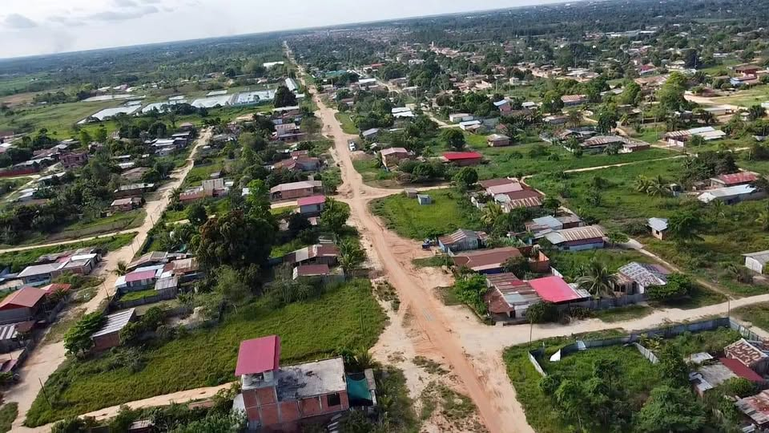

PEN25 300 m²

¡REMATE DE TERRENO CON TÍTULO DE PROPIEDAD! 🔥 💰 PRECIO DE REMATE: S/ 25,000 📜 ¡CON TÍTULO DE PROPIEDAD! 🏡 10 METROS DE FRENTE × 30 METROS DE FONDO 📐 ÁREA TOTAL: 300 M² Si estás buscando un terreno amplio, económico y con documentación formal, esta puede ser una excelente oportunidad. 📍 Ubicación: Asociación María Luisa Vela de Nitzuma 📌 A solo 4 cuadras de la Av. Habilitación Urbana, una avenida importante de la zona que conecta directamente hacia el Mercado Minorista, llegando aproximadamente en 8 minutos. 📜 DOCUMENTACIÓN ✅ Título de propiedad ✅ Autovalúo pagado todo el año ✅ Document